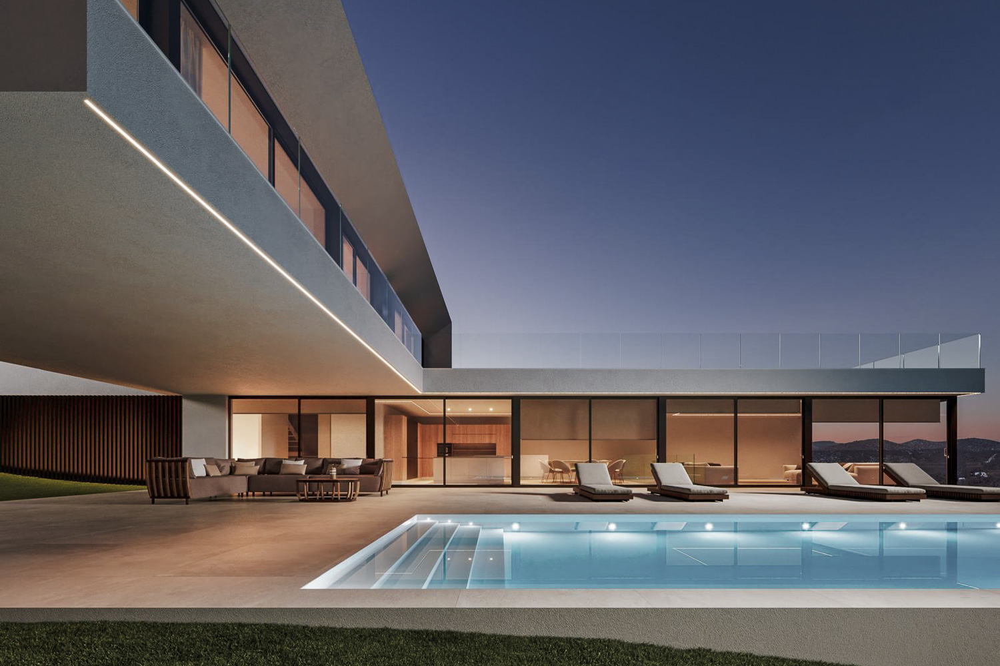
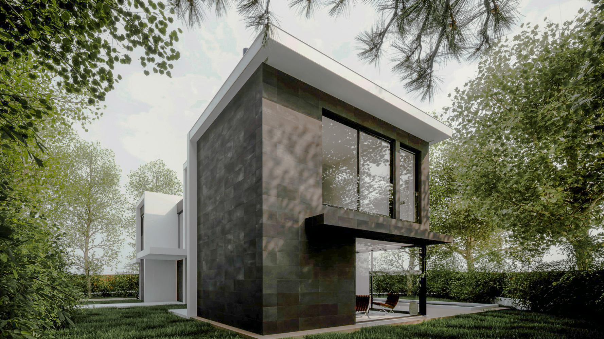
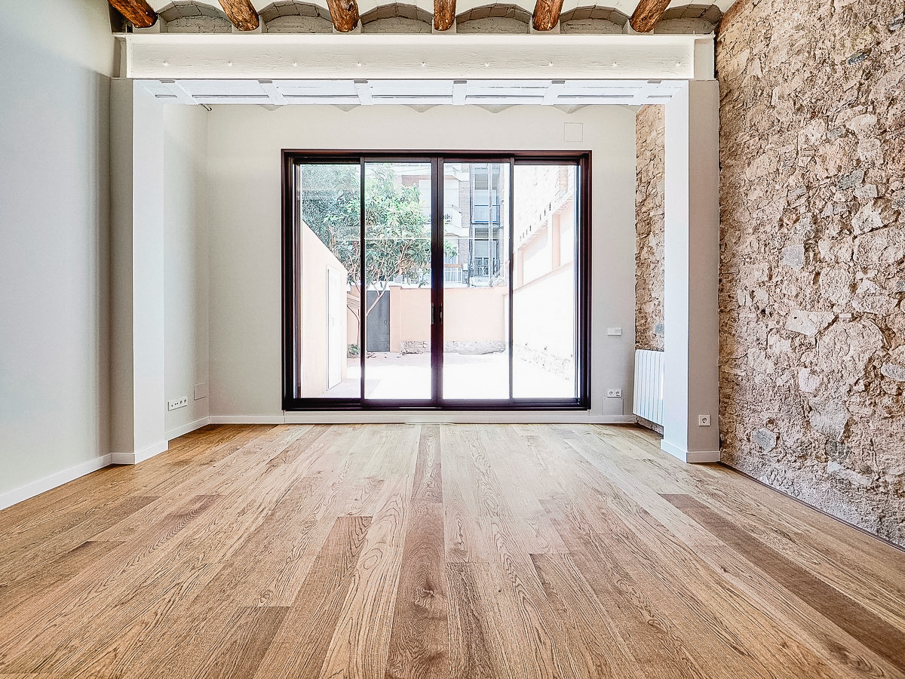
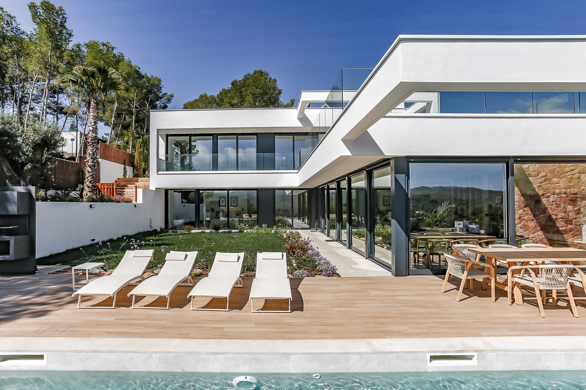

Concebimos la arquitectura como una respuesta esencial al lugar, la materia y la luz. Buscamos la belleza en la honestidad de la forma y la precisión de cada detalle.
ESTUDIO
FILOSOFÍA Y MÉTODO
Es un refugio sereno, una vivienda que se repliega para que la luz y la calma ocupen el centro.

La búsqueda del silencio a través de una masa ciega que protege microuniversos de patios interiores.

Una casa donde la arquitectura se convierte en paisaje, y el paisaje en parte esencial del habitar.

Su diseño sigue una cadencia precisa de llenos y vacíos, generando una composición arquitectónica donde la luz y la sombra alternan en perfecta armonía.

Claroscuro es una reforma en planta baja de un edificio de 1920 en la plaza Joaquim Pena, en Sarrià.

Vivienda concebida para capturar las corrientes de aire fresco y la luminosidad mediterránea a través de celosías y patios pasantes.
HABLEMOS DE TU PRÓXIMO PROYECTO
Estamos disponibles para encargos, colaboraciones y consultas arquitectónicas internacionales.
Barcelona, España